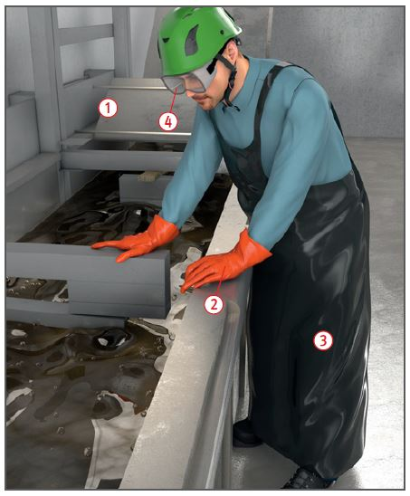
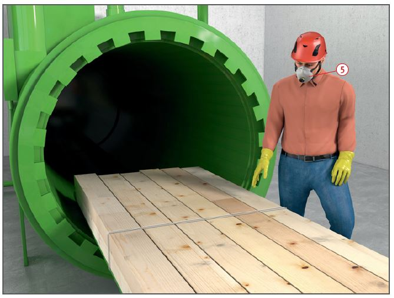

Gefährdungen
- Holzschutzmittel enthalten biozide Wirkstoffe:
- Insektizide gegen Schadinsekten,
- Fungizide gegen zerstörende oder verfärbende Pilze.
- Fixierende Holzschutzmittel
können sensibilisierende und
krebserzeugende Chrom-(VI)-Verbindungen enthalten, die bei Verarbeitung und Bearbeitung auch als atembare Stäube vorliegen können.
- Fast alle Holzschutzmittel stellen eine Gefährdung für die Umwelt dar.
Allgemeines
- Holzschutzmittel mit bioziden Wirkstoffen unterliegen der Biozidzulassung. Zugelassene Holzschutzmittel haben eine Zulassungsnummer.
- Holzschutzmittel für tragende Bauteile können eine allgemeine bauaufsichtliche Zulassung (DIBt) mit der Nummer Z-58.1-xxxx haben.
Schutzmaßnahmen
Technische Schutzmaßnahmen
- Informationen und Betriebsanweisungsentwürfe liefert der GISCODE für Holzschutzmittel im Gefahrstoffinformationssystem der BG BAU – WINGIS (www.wingis-online.de).
Vorbeugender Holzschutz:
- Möglichst kesseldruckimprägniertes Holz verwenden, sonst in Trogtränkanlagen oder stationären Anlagen imprägnieren
 .
.
- Handauftrag nur mit Pinsel, Walze o.Ä.
Achtung: Spritzen und Sprühen ist unzulässig.
- Abtropfbereiche für frisch imprägniertes Holz einrichten.
Bekämpfender Holzschutz:
- Bei Verwendung lösemittelhaltiger Holzschutzmittel auf
gute Raumbe- und -entlüftung
achten. Lösemitteldämpfe sind
schwerer als Luft, sinken auf den
Boden und verdrängen dabei die
Atemluft nach oben. Außerdem
kann eine gefährliche explosionsfähige Atmosphäre entstehen. Darum technische
Lüftungsmaßnahmen durchführen – z. B. ex-geschützte
Absaugung – oder Dachraum
durch Entfernen der unteren
Dachziegelreihen auf beiden
Seiten des Daches belüften.
Persönliche und organisatorische Schutzmaßnahmen
- Bekämpfender Holzschutz mit Produkten, die als akut toxisch Kategorie 1 bis 4 (H300, H310, H330, H301, H311, H302, H312, H332) und/oder STOT SE 1,2 (H370, H371) und /oder STOT RE1,2 (H372, H373) eingestuft sind, nur durch Fachbetriebe mit Sachkundenachweis. Diese Tätigkeiten sind anzeigepflichtig.
- Hautkontakt mit Holzschutzmitteln und frisch imprägniertem Holz vermeiden. Geeignete Schutzhandschuhe
 und ggf. Schutzschürze
und ggf. Schutzschürze  auswählen.
auswählen.
- Hautschutzplan beachten.
- Schutzbrille benutzen
 .
.
- Bei Spritzern in die Augen sofort
mit viel Wasser spülen und umgehend Augenarzt aufsuchen.
- Atemschutz benutzen, z. B.
- beim Umgang mit lösemittelhaltigen Produkten, wenn keine ausreichende Lüftung möglich ist,
- bei der Entnahme von frisch
imprägniertem Holz aus
Kesseldruckanlagen (P2, P3 oder FFP2, FFP3)
 .
.

Arbeitsmedizinische Vorsorge
- Arbeitsmedizinische Vorsorge
nach Ergebnis der Gefährdungsbeurteilung
veranlassen (Pflichtvorsorge)
oder anbieten (Angebotsvorsorge).
Hierzu Beratung
durch den Betriebsarzt.
Zusätzliche Hinweise
Schutz der Umwelt
- Unter Imprägnieranlagen flüssigkeitsdichte Auffangeinrichtungen (Wannen, Tröge) vorsehen.
- Beim Handauftrag Folien auf dem Boden auslegen.
- Holzschutzmittelreste und schutzmittelbehandelte Hölzer als Sonderabfälle umweltgerecht entsorgen. Holzschutzmittelimprägniertes Holz fällt bei der Beseitigung und Verwertung unter die Altholzverordnung.
07/2021